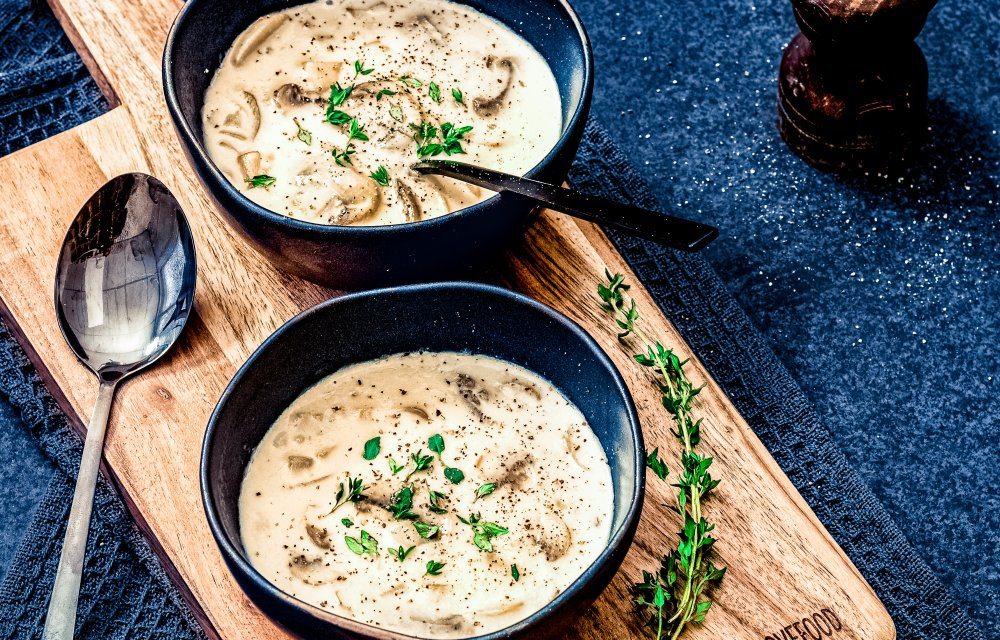

Champignonsoep

Ingredienten
- 250 g champignons
- 1 ui
- 30 g roomboter
- 2 el bloem
- 1 liter bospaddenstoelenbouillon (2 bouillonblokjes)
- 125 ml slagroom
Bereiding
- Wrijf de champignons schoon en snijd ze in plakjes. Snipper de ui.
- Smelt de boter in een grote soeppan op laag vuur.
- Voeg de champignons toe en bak 10 minuten op middelhoog vuur, voeg na 5 minuten de ui toe.
- Kook ondertussen 1 liter bouillon.
- Zet het vuur weer laag en voeg de bloem toe aan de champignons, bak nog 1 minuut terwijl je blijft roeren.
- Schenk nu een kwart van de bouillon bij de champignons, roer tot er een dikke sausachtige substantie ontstaat.
- Meng vervolgens de overige bouillon met het champignonmengsel, zet het vuur weer middelhoog en kook 10 minuten.
- Voeg na 10 minuten de slagroom toe aan de soep en kook het geheel nog 2 minuten zachtjes door. Breng de soep tenslotte op smaak met een snuf peper en zout.